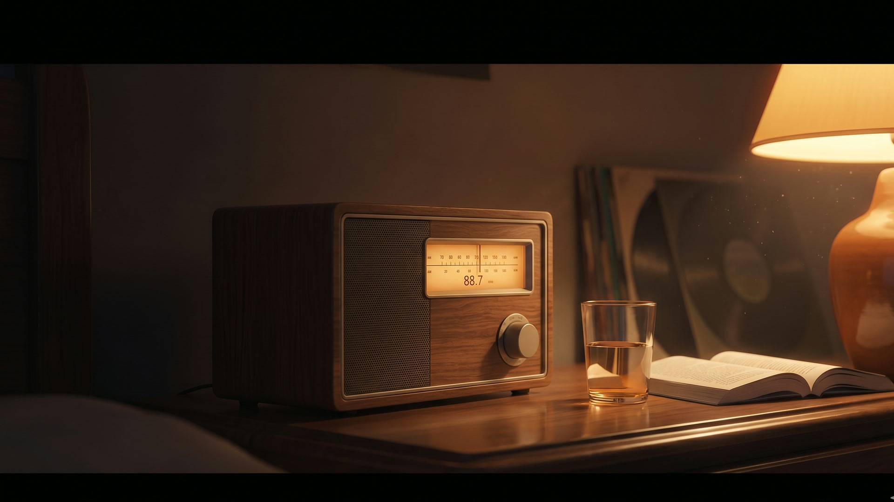
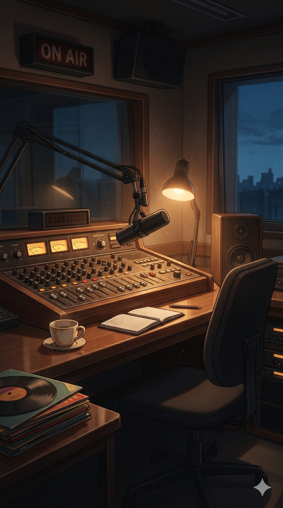
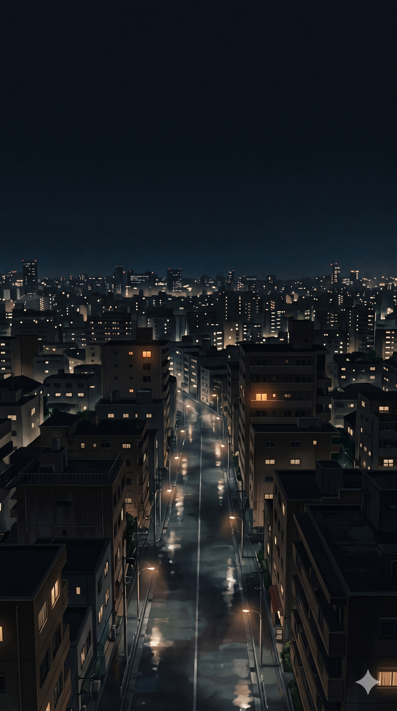

It’s three fourteen in the morning.

There used to be radio shows for this.

Most of them are gone now.
So we made a new one.
A song. Written for you. While you talk.
Or take the chair.

Every song joins a growing archive.
Built in twenty-four hours.